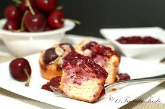
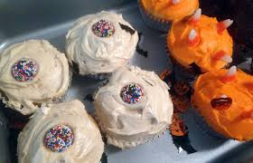
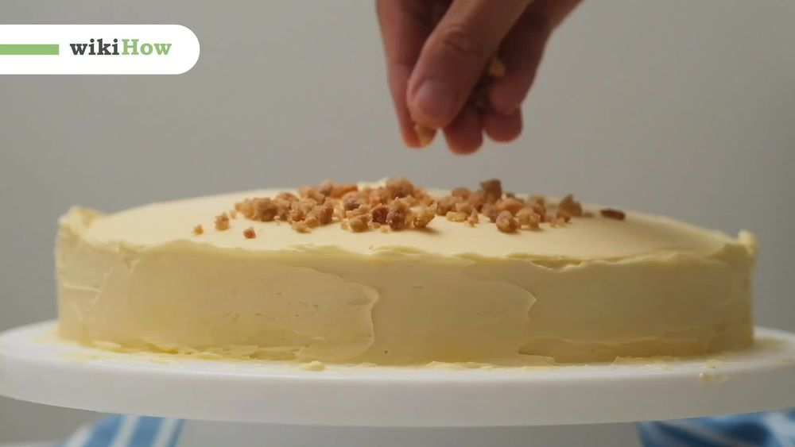
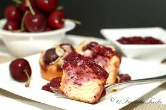
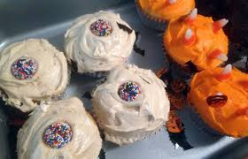
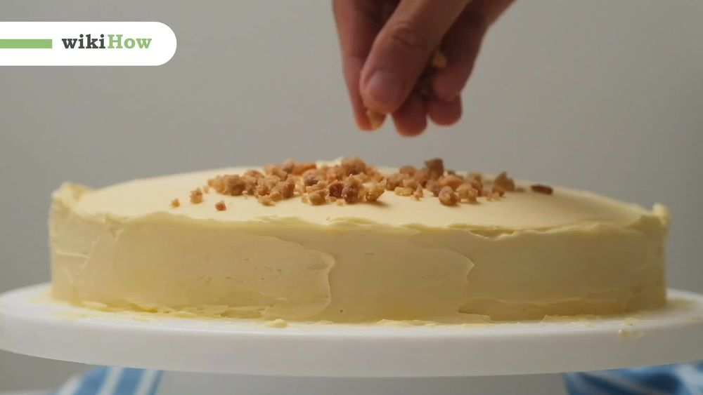

Order Fresh Cake
Cake is a form of sweet food made from flour, sugar, and other ingredients, that is usually baked. In their oldest forms, cakes were modifications of bread, but cakes now cover a wide range of preparations .
A basic flour mixture serves as the foundation for sweet and rich cakes and what are known as little cakes, called cookies, and their savory cousins being quick-breads and yeast breads. Basic ingredients for made-from-scratch cake recipes often include flour, sweetener (sugar), fat (butter, vegetable oil), liquid (milk), leavening agent (steam, beaten eggs, baking powder and/or baking soda), and flavorings (salt, vanilla extract). Cakes can also be purchased ready-made or baked with packaged mixes that come ready to be combined with water, eggs and vegetable oil.